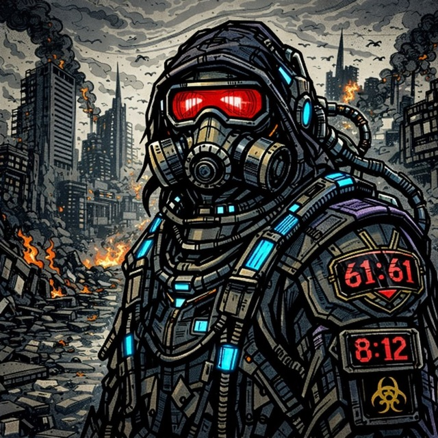
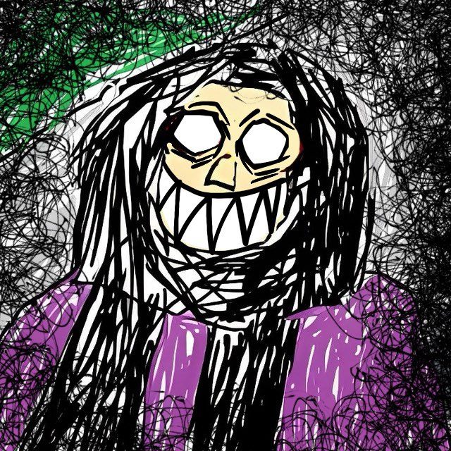

ROOT DIRECTORY
Добро пожаловать в систему V.M.A.
Часть информации была повреждена во время последней синхронизации.
Рекомендуется изучить доступные записи перед попыткой восстановления данных.
Часть информации была повреждена во время последней синхронизации.
Рекомендуется изучить доступные записи перед попыткой восстановления данных.
DATABASE OVERVIEW
RECENT SYSTEM LOGS
03:16:59
Новая запись обнаружена.
03:17:00
Несоответствие временных данных.
03:17:01
Обнаружено повторное обращение к субъекту.
UNKNOWN
[ЗАПИСЬ НЕ ИМЕЕТ ИСТОЧНИКА]
SYSTEM NOTICE
EARTH REGISTRY
Реестр обнаруженных пространственно-временных
структур. Большая часть идентификаторов
не поддаётся восстановлению.
EARTH-001
Сведения отсутствуют.
UNKNOWN
EARTH-006
Запись частично повреждена.
UNSTABLE
EARTH-013
Источник идентификатора неизвестен.
UNKNOWN
EARTH-061
Последнее соединение не завершено.
LOST
EARTH-6161
[ДАННЫЕ ОТСУТСТВУЮТ]
RESTRICTED
SEARCH RESULT
SUBJECT DATABASE
Каталог зарегистрированных субъектов.
Некоторые записи могут относиться
к одной и той же сущности.

SUBJECT // 6161
POST-APOCALYPTIC
Обнаружен после масштабного события.
Единственный зарегистрированный
выживший в соответствующей записи.
STATUS: ALIVE / UNKNOWN
SUBJECT RECORD:
Последнее подтверждённое местоположение:
UNKNOWN.
Период наблюдения:
6161.
Примечание:
В некоторых документах субъект
зарегистрирован до момента своего
первого появления.
[НЕСООТВЕТСТВИЕ ХРОНОЛОГИИ]

SUBJECT // 013
INSANE
Наблюдаются нарушения восприятия.
Субъект сообщает о голосах
и воспоминаниях неизвестного происхождения.
STATUS: UNSTABLE
SUBJECT RECORD:
Субъект неоднократно сообщал
о присутствии неизвестных лиц.
В нескольких случаях описанные события
совпали с записями других субъектов.
Субъект утверждает, что никогда
не встречал их.
[ЗАПИСЬ ПРЕРВАНА]
SUBJECT // 006
INFECTED
Зафиксированы необъяснимые изменения физиологических показателей. Происхождение изменений неизвестно.
STATUS: UNCONFIRMED
SUBJECT // 003
SAD
Субъект описывает повторяющийся сон. Содержание сна содержит события, не зарегистрированные в его временной линии.
STATUS: ISOLATED
SUBJECT // 009
ANGRY
Субъект сообщает о посторонних голосах. Реакция на них становится агрессивной. Источник сигналов не установлен.
STATUS: UNSTABLE
DATABASE WARNING
INCIDENT 6161
ACCESS RESTRICTED
ДАННЫЕ О СОБЫТИИ НЕ МОГУТ БЫТЬ
ПРЕДСТАВЛЕНЫ В ТЕКУЩЕЙ ВЕРСИИ АРХИВА.
ПРИЧИНА: НАРУШЕНИЕ ЦЕЛОСТНОСТИ ВРЕМЕННОЙ ПОСЛЕДОВАТЕЛЬНОСТИ.
ПРИЧИНА: НАРУШЕНИЕ ЦЕЛОСТНОСТИ ВРЕМЕННОЙ ПОСЛЕДОВАТЕЛЬНОСТИ.
RECOVERED FRAGMENT
6161 — [НЕПОЛНАЯ ЗАПИСЬ]
SYNCHRONIZATION
NO VALID DATA
ВОЗМОЖНОСТЬ СИНХРОНИЗАЦИИ
НЕ ПОДТВЕРЖДЕНА.
ПОСЛЕДНИЙ ЗАПРОС СОДЕРЖАЛ 5 РАЗЛИЧНЫХ ИДЕНТИФИКАТОРОВ.
ОТВЕТ ПОЛУЧЕН: 1.
ПОСЛЕДНИЙ ЗАПРОС СОДЕРЖАЛ 5 РАЗЛИЧНЫХ ИДЕНТИФИКАТОРОВ.
ОТВЕТ ПОЛУЧЕН: 1.
COMMUNICATION PROTOCOL
PROTOCOL NOT FOUND
СИСТЕМА НЕ ОБНАРУЖИЛА
ДОСТУПНОГО ПРОТОКОЛА СВЯЗИ.
ПРИ ЭТОМ ВХОДЯЩИЕ СИГНАЛЫ ПРОДОЛЖАЮТ ПОСТУПАТЬ.
ПРИ ЭТОМ ВХОДЯЩИЕ СИГНАЛЫ ПРОДОЛЖАЮТ ПОСТУПАТЬ.
NULL DIRECTORY
DIRECTORY DOES NOT EXIST
УКАЗАННЫЙ РАЗДЕЛ НЕ ОБНАРУЖЕН.
ПРИ ЭТОМ ЗАПРОСЫ К НЕМУ БЫЛИ ЗАФИКСИРОВАНЫ.
КОЛИЧЕСТВО ЗАПРОСОВ: 0
ПРИ ЭТОМ ЗАПРОСЫ К НЕМУ БЫЛИ ЗАФИКСИРОВАНЫ.
КОЛИЧЕСТВО ЗАПРОСОВ: 0